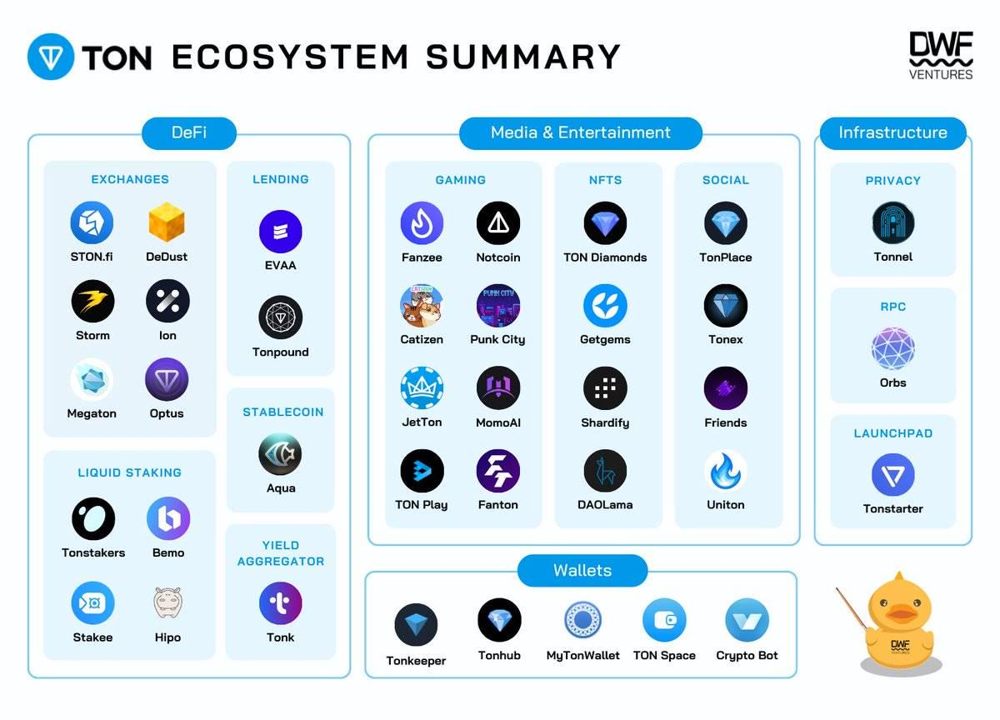

Project Overview
STON.fi, DeDust 등 TON DEX 간 가격과 유동성 정보를 비교하고, 유리한 swap 경로와 arbitrage 기회를 Telegram 안에서 확인할 수 있는 봇/미니앱을 제안했습니다. 단순한 가격표가 아니라 수수료, 슬리피지, 유동성, 실행 가능성을 함께 계산하는 구조로 기획했습니다.
TON DeFi
DEX Aggregator
Arbitrage Bot
Telegram Mini App
